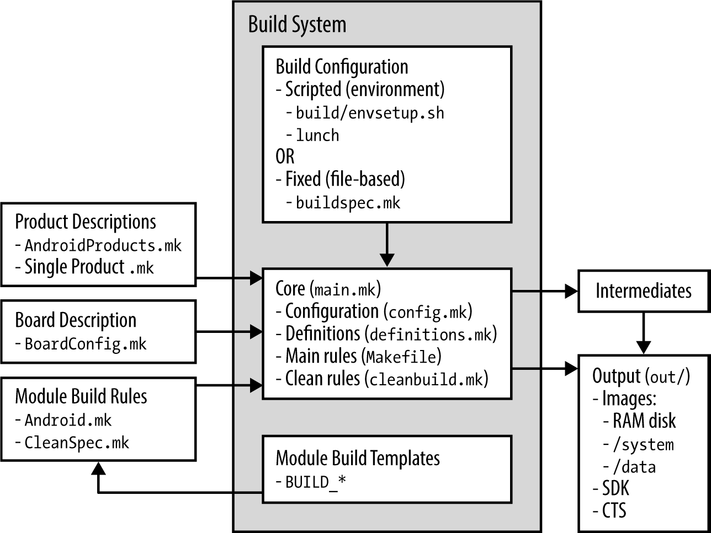
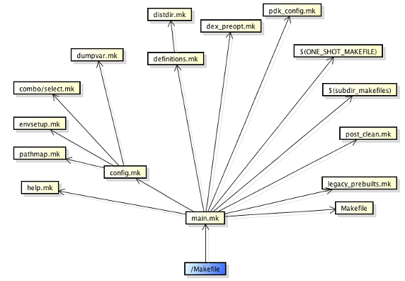

CM14.1的构建机制
Date: Apr 10, 2017 Views: 3479想知道CM14.1可以构建多少个型号?用下面这个命令
$ find . -name Android.mk | wc -l
可以看到有3865个modules.
如下为Android build system 概览

配置
构建系统的首要任务之一就是配置config.mk。
构建可以通过如下两种方式:
1.envsetup.sh and lunch 命令
2.提供buildspec.mk 在根目录
envsetup.sh是干嘛的?
尽管envsetup.sh不是实际工作的一部分,但为初始化了build 环境.
$ . build/envsetup.sh
$ hmm
Invoke ". build/envsetup.sh" from your shell to add the following functions to
your environment:
- croot 切换到源码树的根目录
- m 在源码树的根目录执行 make
- mm Build 当前目录下的模块
- mmm Build 指定目录下的模块
- cgrep 在所有 C/C++ 文件上执行 grep
- jgrep 在所有 Java 文件上执行 grep
- resgrep 在所有 res/*.xml 文件上执行 grep
- godir 转到包含某个文件的目录路径
- printconfig 显示当前 Build 的配置信息
- add_lunch_combo 在 lunch 函数的菜单中添加一个条目
-------------------等等几十个命令------------------
Make 文件说明 整个 Build 系统的入口文件是源码树根目录下名称为“Makefile”的文件，当在源代码根目录上调用 make 命令时，make 命令首先将读取该文件。 Makefile 文件的内容只有一行：“include build/core/main.mk”。该行代码的作用很明显：包含 build/core/main.mk 文件。在 main.mk 文件中又会包含其他的文件，其他文件中又会包含更多的文件，这样就引入了整个 Build 系统。 这些 Make 文件间的包含关系是相当复杂的，图 3 描述了这种关系，该图中黄色标记的文件（且除了 $开头的文件）都位于 build/core/ 目录下。
